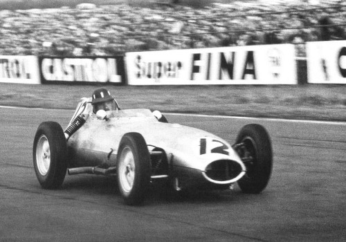
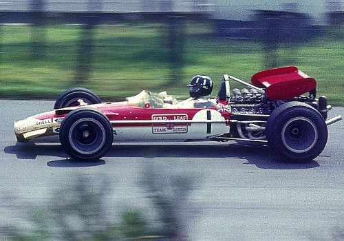
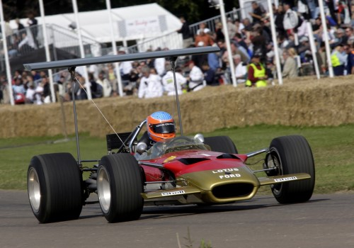
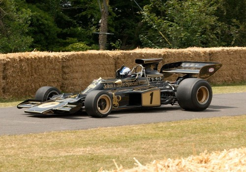
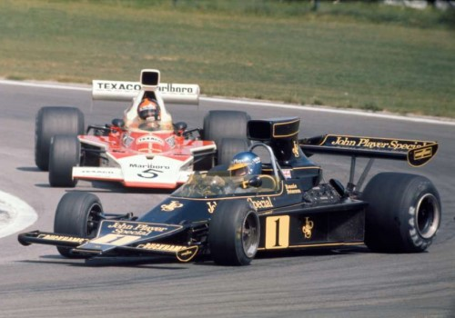
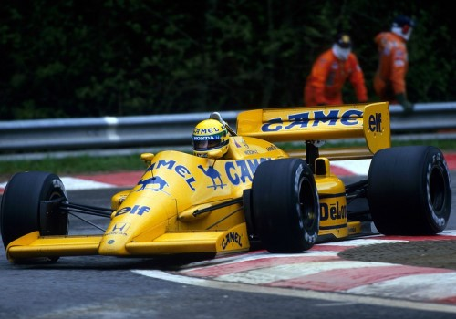
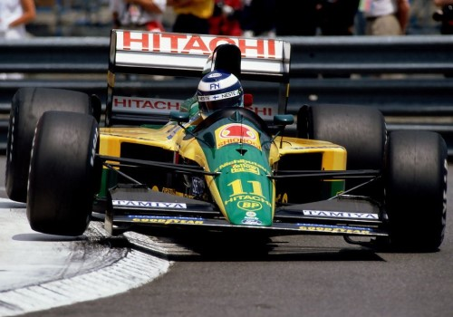
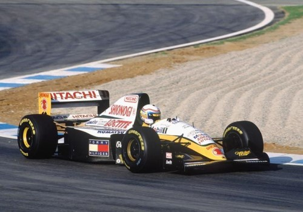

Lotus
Kezdetek (1948-1957)
Colin Chapman 1952-ben alapította a Lotus Engineering Ltd.
sportautógyárat az angliai Hornseyben. A Lotus gyors sikereket ért el az 1953-as Mk 6 és az 1954-es Mk 8 sportautóval. A Team Lotus 1954-ben
kivált a Lotus Engineeringből. Ez a részleg versenyautókat gyártott, és több versenysorozatban vett
részt. A vállalat a nevét Colin Chapman feleségéről kapta.
Zöld-sárga emblémájában Anthony Colin Bruce Chapman nevének kezdőbetűi szerepeltek. Az 1957-es szezonra új
Formula–2-es szabályokat hirdettek ki, és Nagy-Britanniában már 1956 folyamán számos versenyt rendeztek a következő évi szabályzás szerint. Az
ezekre benevezett autók többsége sportautó volt, közöttük is nagy számban voltak a döntően Coventry
Climax motorral szerelt Lotus 11-esek, élükön Colin Chapman
csapatának, a Team Lotusnak két versenyzőjével,
Cliff Allison-al és
Reg Bicknell-el.
A következő évben megjelent a Lotus 12-es, amivel
Cliff Allison 1958-ban megnyerte a Silverstone-i Nemzetközi
Formula–2-es Kupát Stuart Lewis-Evans Cooperje előtt
(bár a futam nem számított bele a Formula–2-es világbajnokságba).
A Lotus első Formula-1-es autója, a Lotus 12-es.
A Lotus első Formula-1-es autója, a Lotus 12-es.
Debütálás a Formula–1-ben (1958-1959)
Colin Chapman a Coventry Climax motorral felszerelt
Lotus 12-vel debütált a Formula–1-ben 1958-ban, Graham Hill és
Cliff Allison versenyzőkkel. A Lotus autói 1968-ig –
a szponzorok megjelenéséig – sötétzöld színűek voltak, mint minden brit csapat akkoriban. Még a szezon közben bevetették a Lotus 16-ost, amivel
Cliff Allison a belga nagydíjon negyedik lett. A csapat
ennek köszönhetően már első szezonjában hatodik lett a konstruktőri bajnokságban. A Lotus 16-ost 1960-ig használták. A történelmi
csapat megszűnéséig, 1994-ig, minden évben pontot szerzett. 1959-ben még orrmotoros autóval mentek a Lotus versenyzői, de az 1960-tól 1963-ig
használt forradalmian új Lotus 18 már középmotoros volt. A vállalat sikereinek köszönhetően bővült: a székhelyüket Cheshuntba helyezték át.

A Lotus 16-os.
A Lotus 18-as.
1960-as évek: Clark és Hill
1960-ban érkezett a csapathoz Jim Clark, aki pályafutása
végéig a csapatnál maradt. Első dobogós helyezését a portugál nagydíjon szerezte egy harmadik hellyel. A későbbi világbajnok
John Surtees is ebben az évben mutatkozott be a csapat színeiben
a sportágban. 1960-ban egy pole pozíciót és egy második helyezést szerzett, a következő évre a Cooperhez igazolt. A Lotus autóval elért
első Formula–1-es győzelmet Stirling Moss aratta az 1960-as
monacói nagydíjon, de nem a Lotus csapattal, hanem a Rob Walker Racing Teammel. Az 1960-as belga nagydíjon, Spában 200 km/h-ás sebességnél
Alan Stacey arcába repült egy madár, emiatt elvesztette az uralmát
autója felett és halálos balesetet szenvedett. Alan Stacey
1958 óta versenyzett a Lotus színeiben, de pontot nem sikerült szereznie. A csapat a szezon végén már a
második helyen zárt a konstruktőri versenyben. A gyári Lotus csapat első győzelmét
Innes Ireland szerezte 1961-ben, Watkins Glenben. Ugyanebben az
évben, Jim Clark az olasz nagydíj 2. körében hátulról
nekiütközött Wolfgang von Trips Ferrarijának. A német
autója a palánknak vágódott, és Wolfgang von Trips holtan
esett ki belőle. Az autó a nézők közé repült, és megölt 13-at közülük. Ez máig a legsúlyosabb baleset a
Formula–1-ben. Ebben az időben költözött a vállalat jelenlegi székhelyére, a norfolki Hethelbe.
Ekkoriban készültek el első híres utcai autóik, a Lotus Seven és a Lotus Elite, amit 1962-ben a Lotus
Elan követett. 1962-re Jim Clark csapattársa a szintén brit
Trevor Taylor lett, aki csak a szezonnyitó
holland nagydíjon tudott pontot szerezni második helyével.
Jim Clark hat pole pozíciót szerzett, de gyakran
esett ki technikai hiba miatt a versenyeken. Három győzelmével az évadzáró dél-afrikai nagydíjon még
volt esélye a bajnoki címre, de kiesett. A világbajnok Graham Hill lett,
a Lotus ismét második lett a konstruktőri bajnokságban. Az év végén egy nem világbajnoki versenyen, Dél-Afrikában,
Gary Hocking (kétszeres gyorsasági motoros világbajnok) halálos
balesetet szenvedett egy Lotus 24-essel. Az 1963-as évadban Jim Clark a
forradalmian új konstrukciójú Lotus 25-tel hét futamot nyert meg, és maximális pontszámmal, 54 egységgel világbajnok lett. Ebben az
időszakban a versenyzők hat legjobb eredményét vették figyelembe az év végén, és
Jim Clark hét versenyt nyert meg, mindössze a monacói nagydíjon nem
állhatott dobogóra. A Lotus 25 azért volt sikeres, mert Colin Chapman
a klasszikus csővázas szerkezet helyett szegecselt könnyűfém fülkét szerelt az autóba, amely kisebb és könnyebb lett. 1964-ben
Peter Arundell lett
Jim Clark csapattársa, akit gyakran sújtották a technikai hibák.
Jim Clark-nak a világbajnoki címre a
szezonzáró mexikói nagydíjon még volt esélye. Egy körrel a vége előtt motorprobléma miatt feladni
kényszerült a versenyt az első helyről, és csak az ötödik helyre sorolták be. A világbajnokságot így
John Surtees nyerte meg Ferrarival,
Jim Clark pedig harmadikként végzett a bajnokságban.

A Lotus 24-es.

A Lotus 25-ös.
1965-ben azonban a skót versenyző ismét jól szerepelt: az első hat futamon, amelyen elindult, győzött. A
monacói nagydíjat kihagyta, mert az indianapolisi 500-on vett részt, amelyet szintén megnyert. Bár az
utolsó három versenyen nem ért célba, újra a maximális pontszámmal világbajnoki címet szerzett a Lotus
33-mal. 1966-ban Formula–1-es autók motormérete 3 literesre nőtt. Az előző évben
Colin Chapman többször beszélt
Keith Duckworth-al egy új Formula–1-es motorról.
Colin Chapman nem tudta volna finanszírozni a
projektet, végül sikerült megegyeznie a Forddal, amely hajlandó volt 100 ezer fontot költeni az új
Cosworth motor megépítésére. Az erőforrás csak 1967-ben készült el, addig átmeneti megoldást kellett
választania a csapatnak. Az 1966-os idényben az olasz nagydíjon a Climaxról a H elrendezésű 16 hengeres
BRM motorra váltottak Jim Clark autójában. A különlegesen
nagy hengerszámú motor egyetlen győzelmét Jim Clark
szerezte Watkins Glenben. Jim Clark a sok kiesés miatt csak a
hatodik lett a pontversenyben. 1967-ben visszatért a csapathoz
Graham Hill. Az első és második versenyen még BRM és
Climax motorral indultak, a holland nagydíjon azonban bemutatkozott a Cosworth DFV motor a szintén új Lotus 49-es modellben.
Jim Clark megnyerte a versenyt, majd győzött Silverstone-ban,
Watkins Glenben és Mexikóvárosban is. Bár a skót a legtöbbször nyert az idényben a technikai hibák miatt csak a két Brabham-Repco mögött
végzett a pontversenyben. Jim Clark élete egyik legnagyobb
versenyét Monzában teljesítette. Az elején vezette a versenyt, mely után a boxba kiállni kényszerült. A boxkiállás másfél percébe került
és körhátrányban tért vissza a pályára. A verseny végére felküzdötte magát az élre, ám az utolsó néhány száz méteren
leállt a versenyautója a benzinpumpa hibája miatt. Ennek ellenére még beért a harmadik helyre. 1968 első
versenyén a Lotus kettős győzelmet aratott. A futamot Jim Clark nyerte,
ez volt az utolsó Formula–1-es győzelme. 1968. április 7-én minden idők egyik legsikeresebb autóversenyzője a Hockenheimringen egy
Formula–2-es versenyen életét vesztette a Lotusban. Néhány nappal ezután
Mike Spence meghalt Indianapolisban, az 500 mérföldes verseny
edzésén, szintén egy Lotusszal. Graham Hill ezután győzött
Jaramában, ahol a Lotus elsőként festette autóit a főszponzor Gold Leaf cigarettamárka színeire.
Monacóban az autóra a sportágban először szereltek szárnyakat,
Graham Hill megnyerte a versenyt. Belgiumban már
több csapat is jóval magasabbra helyezett szárnnyal kísérletezett, amelyet a Chaparral sportautó
ihletett. Graham Hill a szezon közepén kevés pontot tudott gyűjteni,
az évadzáró mexikói nagydíjon mellette még Jackie Stewart és
Denny Hulme is esélyes volt a címre.
Graham Hill újra győzni tudott, így megszerezte a
világbajnoki címet. Mario Andretti a Lotus színeiben indult
először a Formula–1-ben, az amerikai nagydíjon, ahol megszerezte a pole pozíciót (a futamon kiesett). A konstruktőri versenyben a Lotus
végzett az élen 75 ponttal. 1969-re Jackie Oliver-t az osztrák
Jochen Rindt váltotta, míg a címvédő
Graham Hill maradt a csapatnál. A spanyol nagydíjon mindkét
versenyző balesetet szenvedett Lotus magasra helyezett, gyengén rögzített szárnyai miatt. Az eset után betiltották a Formula–1-ben az
így elhelyezkedő szárnyakat. Az évben Jackie Stewart és a
Matra-Ford dominált, a Lotus a harmadik lett a konstruktőri versenyben.
Graham Hill megszerezte ötödik monacói győzelmét, míg
Jochen Rindt első futamgyőzelmét aratta le Watkins Glenben.
Colin Chapman a négykerékhajtású Lotus 63-mal is kísérletezett
(amelyet Mario Andretti vezetett két versenyen) de nem sikerült
pontot szerezni.

A Gold Leaf által szponzorált Lotus 49-es.

A Lotus 49B magasan elhelyezett szárnnyal.
1970-es évek: Rindt, Fittipaldi és Andretti
1970-re Jochen Rindt lett a Lotus első számú versenyzője.
A szezon első felében a már hároméves, 49-es Lotusszal Monacóban még győzni tudott egy kis szerencsével
(Jack Brabham-re óriási nyomást gyakorolt, aki
az utolsó körökben hibázott és kiesett Jochen Rindt elől),
pedig már Brands Hatch-ben tesztelte a Lotus 72-t. Egyelőre nem merték bevetni, mert az autónak még futómű-problémái voltak. Aztán Zandvoortban
bemutatkozott a forradalmian új 72-es modell, amelynek a hűtőcsatornái már kétoldalt voltak, és az orra
le volt lapítva. A modellt egészen 1975-ig használták. Jochen Rindt
mindjárt győzelemmel kezdett, és sorozatban négy versenyt nyert vele. A pontversenyt magabiztosan vezető
Jochen Rindt a monzai edzésen tartani akarta a
Ferrarik tempóját, így a Lotusról eltávolíttatta az összes légterelő szárnyat.
Jochen Rindt a Parabolicában elvesztette az uralmat autója felett
és a szalagkorlátnak csapódott. Az autó eleje leszakadt, az ütközés erejének következtében a versenyző előrecsúszott, a kormánymű
Jochen Rindt légcsövének ütközött. Az életét már
nem sikerült megmenteni. Jochen Rindt magabiztosan vezette a
pontversenyt, Jacky Ickx akkor lehetett volna
bajnok, ha a hátralévő három futamot megnyeri, de csak kettőt tudott. A harmadikat a
Jochen Rindt-et helyettesítő
Emerson Fittipaldi nyerte, élete első győzelmét aratva.
Jochen Rindt a sportág egyetlen posztumusz
világbajnoka. A Lotus 59 ponttal megnyerte ez évben a konstruktőri bajnokságot. 1971-re a svéd
Reine Wisell lett
Emerson Fittipaldi csapattársa. Ez az év elég gyengének
bizonyult, több, mint 10 éve fordult elő utoljára, hogy a Lotus nem nyert futamot.
Colin Chapman a gázturbinás 56B-vel kísérletezett. Az autó a
Formula–1-ben nem bizonyult olyan hatékonynak mint az 1968-as indianapolisi 500-on. Csak három
világbajnoki versenyen indultak vele, pontot nem sikerült szerezni. 1972-ben már a John Player Special
cigarettamárka fekete-arany színei jelentek meg a Lotuson.
Emerson Fittipaldi öt futamgyőzelemmel és 61 ponttal
világbajnok lett. Csapattársa, David Walker
egyetlen pontot sem szerzett, de így is megnyerték a konstruktőri versenyt. Az akkor 25 éves
Emerson Fittipaldi ezzel korának legfiatalabb világbajnoka lett,
amit Fernando Alonso döntött meg 2005-ben.
A Gold Leaf által szponzorált Lotus 72-es.

A Lotus 72E fekete-arany színekben.
1973-ban hatodszorra is megnyerték a konstruktőri versenyt az
Emerson Fittipaldi -
Ronnie Peterson versenyzőpárossal.
Emerson Fittipaldi második,
Ronnie Peterson harmadik lett a bajnok
Jackie Stewart mögött. A vereség után, 1974-re
Emerson Fittipaldi elhagyta a csapatot, helyére
Jacky Ickx érkezett. A 72-es modell egyre elavulttabbá vált,
ezért a szezon elején bevetették a Lotus 76-ost. Ez a modell sem bizonyult sikeresnek, ezért
visszatértek a 72-eshez. Ronnie Peterson győzött Monacóban,
Dijonban és Monzában. Az 1975-ös évben is folytatták a Lotus 72-essel, mindössze 9 pontot sikerült szerezniük. 1976-ra elkészült a Lotus 77-es.
Ronnie Peterson nem volt megelégedve az autóval és az első
verseny után elhagyta a csapatot. A szintén svéd
Gunnar Nilsson vette át a helyét,
aki a hosszú idő után visszatérő Mario Andretti csapattársa lett. A
szezonzáró esős japán nagydíjon újra győzelmet ünnepelhetett a csapat
Mario Andretti-nek köszönhetően. 1977-ben
Colin Chapman,
Peter Wright és
Tony Rudd megalkotta a 78-as modellt. Az autó két oldaldobozának
alja egy-egy fejjel lefelé fordított szárny (innen ered a wing car, azaz "szárnyas autó" elnevezés) volt, amik nagy
sebességnél hozzászorították az autót az úthoz.
Mario Andretti négy győzelme ellenére sem tudta megszerezni a
világbajnoki címet, gyakran esett ki a Ford V8-as motor meghibásodása miatt.
Gunnar Nilsson pályafutása
egyetlen futamgyőzelmét aratta a belga nagydíjon. 1978 volt az új konstrukció nagy éve, a szezont a
Lotus uralta. Ronnie Peterson visszatért a csapathoz,
de Colin Chapman második számú versenyzőnek
szerződtette, mivel úgy vélte, Mario Andretti érdeme az új
autó kifejlesztése. A belga nagydíjtól a továbbfejlesztett Lotus 79-essel indultak a futamokon.
Ronnie Peterson, aki két győzelmet szerzett, két
versennyel a szezon vége előtt, az olasz nagydíjon történt rajtbalesetben megégett és másnap
tüdőembóliában meghalt. A svédet az utolsó két futamon
Jean-Pierre Jarier helyettesítette, de nem sikerült pontot
szereznie. A cím így a hat futamot megnyerő Mario Andretti-é lett
64 ponttal, Ronnie Peterson 51
egységet szerzett és második lett. A wing car a sportág talán eddigi legnagyobb forradalma volt,
annyira, hogy minden más autót elavulttá tett, és két éven belül már minden autó úgy működött, mint a
79. 1979-re a Lotus főszponzora a Martini lett, az autók újra a hagyományos brit zöld színt
kapták. Mario Andretti csapattársa az argentin
Carlos Reutemann lett. Számos csapat sikeresen másolta le,
illetve fejlesztette tovább a wing car ötletét. A Lotus az első versenyeken a 79-es típussal indult.
Ennek továbbfejlesztése a Lotus 80-as lett, de nem sikerült olyan hatékonyra, mint elődje. Csak
Mario Andretti próbálta ki az új autót a spanyol nagydíjon,
majd azt követő két versenyen. Ezután visszatért a 79-eshez az év további részében. A csapat egyetlen versenyt sem tudott nyerni.
39 ponttal a negyedik helyen zártak a konstruktőrök között. A '70-es években a Lotus érte el először az 50 futamgyőzelmet (1974-ben).
A Ferrari másodikként ünnepelhette az ötvenediket, de ők már 1950-ben, a sportág indulása óta vettek részt a futamokon.

A kevésbé sikeres Lotus 76-os.
A forradalmi Lotus 78-as, a wing car.
1980-as évek: leszállóágban a csapat, turbókorszak
1980-ra Mario Andretti mellé az olasz
Elio de Angelis-t ültették be.
Mario Andretti mindössze az utolsó versenyen
tudott pontot szerezni 6. helyével, míg Elio de Angelis
egy második helyet szerzett Brazíliában. Mario Andretti a
rosszul sikerült évad után az Alfa Romeóhoz szerződött. 1981-ben Andretti helyére
Nigel Mansell került. A brit az előző évben tesztversenyző
volt, de két versenyen részt vett harmadik versenyzőként. 1981-ben egy újabb forradalmi ötlettel, az ikerkasztnis Lotus 88-al
készültek rajthoz állni. Lényege, hogy két alvázat építettek, az egyik vázra a versenyző került az oldalsó légcsatornákkal, a másikra a
felfüggesztés és az autó többi része, mint a motor és a váltó. A két váz össze volt csúsztatva, úgyhogy
az kényelmesebbé tette a versenyzőre ható erőhatásokat a kanyarokban. Menet közben a pilóta a hidraulika
segítségével leengedte a belső vázat, és a kocsi hasmagasságát a kívánt szintre csökkentve megnövelte a
szívóhatást. A felső kasztnit nagy sebességeknél a menetszél az alsóhoz szorította, ezzel növelte az
autóra ható leszorító erőt, hiszen a felső burkolat közelebb került az aszfalthoz, és a szívóhatás is
megnőtt. Az autót azonban még a versenybe állítás előtt betiltották. Az
Elio de Angelis -
Nigel Mansell versenyzőfelállás 1984-ig maradt fenn.
Ebben az időszakban a tapasztaltabb Elio de Angelis
dominált. Az olasz 1982-ben győzött az osztrák nagydíjon, amelyen mindössze 5 századmásodperc választotta el a második
Keke Rosberg-től. Ez év decemberében, mindössze 54 éves
korában, szívrohamban elhunyt Colin Chapman, a csapat
legendás alapítója és főnöke. Tervei közt már akkor szerepelt az aktív felfüggesztés ötlete, de csak
1987-ben alkalmazták először. A Lotus vezetését Peter Warr vette át.
1983-ban szerződtették Gérard Ducarouge-t, aki innentől
a csapat autóit tervezte. 1983 közepén a csapat a Renault turbómotorjaira tért át a már gyengének számító Cosworth-ről. 1984-ben a
csapat harmadik lett a konstruktőri világbajnokságban 47 ponttal, győzelem nélkül.
Nigel Mansell ez évben Dallasban megszerezte pályafutása első
Formula–1-es pole pozícióját, mögüle Elio de Angelis rajtolhatott
el. A verseny végén tönkrement a brit váltója, az autó néhány méterrel a cél előtt állt le. Ekkor a már a nagy hőségtől is kimerült
Nigel Mansell betolta autóját a célba, majd összeesett.
Így végül hatodik lett, ami egy pontot ért neki. Elio de Angelis
végül a harmadik helyen futott be. Nigel Mansell 1984 végén
elhagyta az igen megbízhatatlan autókkal rendelkező Lotust, és a Williamshez igazolt. Helyére a fiatal brazil tehetséget,
Ayrton Senna-t szerződtették.
1985-ben Ayrton Senna kétszer,
Elio de Angelis egyszer nyert futamot a Lotus 97T-vel.
Összesen 71 pontot gyűjtöttek, amennyit már igen régen sikerült elérniük. Ennek ellenére csak negyedikek lettek a viszonylag szoros
bajnokságban. Ayrton Senna '85-ben összesen hét pole-t
szerzett. Az ezekben az időkben készült arany-fekete Lotusokat sokan a valaha készült legszebb Formula–1-es autók közé sorolják.
1986-ban Johnny Dumfries
lett a brazil csapattársa. A megbízhatóság ismét probléma volt, ahogyan az előző években is. Összesen
négy olyan verseny volt, ahol mindkét versenyző be tudta fejezni a futamot.
Ayrton Senna nyolc pole-ból két
győzelmet aratott. Az év végén 58 ponttal a harmadik helyen zárt a Lotus a konstruktőrök között. Az
idény végén elvesztették az addigi főszponzort, a John Player & Sons cigarettamárkát. Helyére a Camel
érkezett, így az autók korábbi arany-fekete színe sárgára változott. Az új szponzor mellett új motor is
érkezett a visszavonult Renault helyére. 1987-re Honda turbómotorok hajtották az autókat az új japán
pilótának, a Johnny Dumfries-t váltó
Nakadzsima Szatoru-nak köszönhetően. A
Gérard Ducarouge által tervezett új 99T aktív
felfüggesztéssel rendelkezett, amely előnyt jelentett, különösen a kanyargós pályákon.
Ayrton Senna ennek ellenére ismét csak kétszer tudott futamot
nyerni, Monacóban és Detroitban. Utóbbi a Lotus utolsó futamgyőzelme volt. A szezonzáró ausztrál nagydíj után a bíróság úgy ítélte meg,
hogy a Lotus-Honda fékvezetékjei szélesebbek a szabályok által megengedettnél, így a csapatot kizárták a versenyből. Az év
végén a brazil a domináns McLaren-Hondához igazolt. A konstruktőrök között a csapat 64 ponttal ismét a
harmadik lett. 1988-ra kiszerelték az autókból az aktív felfüggesztést, mivel nagyon drága volt az
alkalmazása, és úgy gondolták, hogy nem éri meg alkalmazni a technológiát. Néhány nagyobb csapat később
újra használta a rendszert, köztük a Williams is, amely ennek köszönhetően teljes mértékben uralta az
1992-es szezont.
A betiltott Lotus 88-as.

Az 1987-es Lotus 99T az új szponzor színeiben.
Ayrton Senna után a háromszoros világbajnok
Nelson Piquet érkezett a Lotushoz két évre. 1988-ban
Nelson Piquet egyetlen futamot sem nyert, de tulajdonképpen
jól döntött, hiszen a Williams csapat (Judd motorral) még rosszabbul szerepelt.
Nelson Piquet a Lotus-Hondával harmadik lett az első két
nagydíjon, ezután azonban csak néhány pontszerző helyet ért el, majd az utolsó ausztrál nagydíjon harmadik lett. Csapattársa egy pontot
szerzett. Az 1989-es esztendő ennél rosszabbul alakult. A Lotus a turbókorszak vége után a gyenge és
megbízhatatlan Judd motorra volt kénytelen váltani, és ez meg is látszott a teljesítményen:
Nelson Piquet mindössze hat futamon szerzett pontot
(12 pontot összesen), egyetlen dobogós helyezés nélkül. Csapattársa,
Nakadzsima Szatoru 3 ponttal zárt. Szezonja mélypontját
a belga nagydíj jelentette, amelyre még kvalifikálni sem tudta magát a brazil.
Gérard Ducarouge 1989 közepén elhagyta a sikertelen
csapatot. Helyére Frank Dernie érkezett,
Peter Warr helyére pedig
Rupert Manwaring került csapatvezetőnek.
1990-es évek: a vég
1990-re Nelson Piquet a Benettonhoz,
Nakadzsima Szatoru a Tyrrellhez igazolt át.
Az új versenyzők Derek Warwick és
Martin Donnelly lettek. Az utóbbi versenyző
Jerezben súlyos balesetet szenvedett és kénytelen volt befejezni F1-es pályafutását. A csapat új modelljébe, a Lotus 102-be,
amelyet 1992-ig használtak, V12-es Lamborghini motorok kerültek, azonban ezek is gyengék voltak. Az év végén a Camel főszponzor is elment a
csapattól. 1991-re a csapat újra a Judd motorokra váltott. Új versenyzőpárosa a későbbi világbajnok
Mika Häkkinen és
Julian Bailey lett.
Julian Bailey-t a szezon közepén
Johnny Herbert váltotta fel. A legsikeresebb
verseny ebben az évben a San Marinó-i volt, amelyen
Mika Häkkinen ötödik,
Julian Bailey hatodik lett. 1992-től
1993-ig a Ford volt a Lotus motorbeszállítója. 1992-ben a szűk költségvetéssel rendelkező csapat 13
pontot gyűjtött a Mika Häkkinen -
Johnny Herbert párossal, a konstruktőrök között
pedig ötödikek lettek. 1993-ra Mika Häkkinen a
McLarenhez távozott, Johnny Herbert csapattársa így az
olasz Alessandro Zanardi, majd belgiumi
balesete után a portugál Pedro Lamy lett. Ebben az évben a
konstruktőri bajnokságban 12 ponttal a hatodikok lettek. 1994-ben Mugen-Honda motorok hajtották a Lotusokat. A csapat utolsó F1-es
esztendejében összesen hat versenyző vezette a versenyautókat. Ebben az évben egyetlen pontot sem
szereztek, ami még soha nem fordult elő a Lotus történetében.
Johnny Herbert és
Pedro Lamy a szezon elején sokat küzdött a többihez képest elavult
autóval. A portugál pilóta egy silverstone-i teszt alkalmával komolyabban megsérült, ezért a korábbi pilóta,
Alessandro Zanardi tért vissza a csapathoz. A szezon közben bevetett
új autót, a 109-est – amelyet Chris Murphy tervezett –
nagy reményekkel várták. Hogy átmenetileg elkerüljék a csődöt, a Lotus a belga nagydíjon
Philippe Adams-t indította, aki fizetett a csapatnak a
versenyzésért. Monzában Alessandro Zanardi a mezőny végén
szerénykedett, de a nagy reményekkel várt új fejlesztésű autó, a 109-es már kész volt. Az autó bemutatkozása nem sikerült rosszul.
Johnny Herbert a 4. helyen végzett az időmérőn, de versenye
nem tartott sokáig, ugyanis rögtön az első sikánban összeütközött
Eddie Irvine autójával, és feladta a versenyt. A szezon végén a
csapatfőnök, Tom Walkinshaw nem hosszabbította meg
Johnny Herbert lejáró szerződését, akivel szemben nem tudták
teljesíteni a szerződésében foglaltakat, így Johnny Herbert
szabadon távozhatott a Ligier, majd a Benetton csapathoz. Októberben a csapat
James Hunt testvére,
David Hunt kezébe került.
A korábban elküldött Johnny Herbert helyére a finn
Mika Salo került. Ekkor már a jövő évi, 112-es jelzésű autót
tervezték. 1995-ben a csapat hivatalosan már nem vett részt a világbajnokságon, de nagyrészt a korábbi csapatra épülve indult a
Pacific Grand Prix a versenyeken. Mint később kiderült, ez volt a legutolsó szezonjuk. Mivel a Pacific nagyrészt a Lotusra épült, új autójuk
festésével is igyekeztek ezt tudatni. A Pacific autókra a Lotusra jellemző zöld csíkot és a cég logóját
festették. A szezon során itt versenyző négy pilóta, Bertrand Gachot,
Giovanni Lavaggi,
Jean-Denis Délétraz és
Andrea Montermini egyetlen
pontot sem tudott szerezni. 1996-ra a Pacific is megszűnt, így a Lotus pályafutása hivatalosan is véget
ért a Formula–1-ben. A Lotus sportautóvállalat azonban ma is működik.

Az 1992-es Lotus 102D.

Az utolsó Team Lotus autó, 1994-ben.
A csapat világbajnoki címeit nagyban annak köszönhette, hogy szinte mindig az autófejlesztés élvonalában
voltak. Colin Chapman újításaival az egész sportágat
többször forradalmasította, ilyen volt a monocoque-karosszéria, az ék alakú Lotus 72, a szponzorok bevezetése, a wing car (Lotus 78) vagy az
aktív felfüggesztés. Colin Chapman fontosabbnak tartotta a
motorok teljesítményénél, hogy autói minél könnyebbek legyenek. Gyakran alkalmazott olyan technológiákat, új anyagokat az autókban, amelyeket
előtte nem tesztelt, az emiatt bekövetkezett balesetekben több versenyzője is meghalt.
Jochen Rindt ezt mondta egyszer: „A Lotusszal vagy világbajnok leszek,
vagy meghalok.” 1970-ben mind a kettő bekövetkezett. Az alapító merész ötletei nélkül talán ma is élne
Jim Clark vagy
Jochen Rindt, de lehet, hogy nem lettek volna világbajnokok.
A csapat 491 verseny és 37 szezon alatt 1419 pontot, 74 futamgyőzelmet, 102 pole pozíciót, 66 leggyorsabb kört, 6 egyéni és
7 konstruktőri címet szerzett.